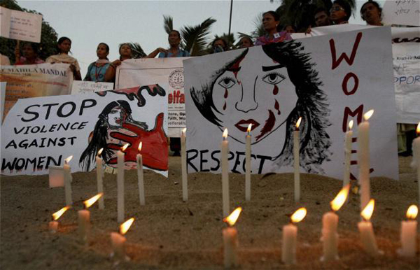
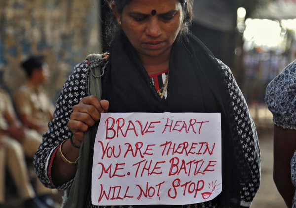
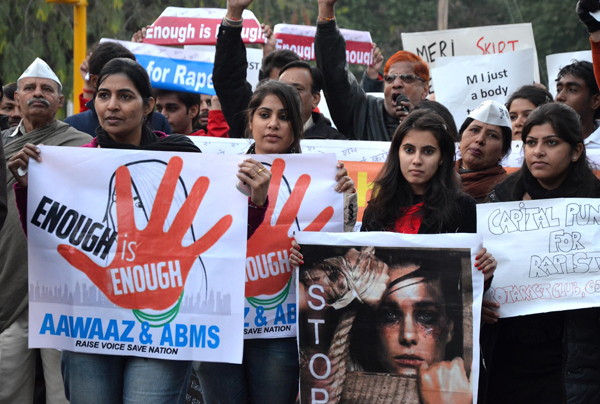

|
|

پرونده هند؛شماره یک: ما و "امانت" هندوستان / گلناز ملک
جمعه15 دی 1391

آیا مرگ امانت و بیداری فمینیستی در هندوستان، به بسیج جنبش فمینیستی در جهان علیه تجاوز و خشونت بر زنان منجر خواهد شد ؟
“”
تغییر برای برابری - گلناز ملک - هند در روز 29 دسامبر 2012 بیدار شد: حدود ساعت دو بامداد، پس از شنیدن خبر درگذشت قربانی 23 سالهی تجاوز گروهی دهلی ـ در بیمارستان الیزابت کشور سنگاپور.
از نخستین ساعات صبح، مردم دهلی و شهرهای دیگر با تلفن، یا از طریق فیسبوک و توییتر یکدیگر را از مراسم عزاداری در خیابان و راهپیمایی سکوت شنبهی سیاه باخبر کردند. این اولین تظاهراتی نبود که پس از انتشار خبر تجاوز گروهی 6 مرد ـ که یکی از آنها زیر سن قانونی استـ به مدت یکساعت در شب 16 دسامبر، به دختر دانشجوی پزشکی در اتوبوسی در حال حرکت، و در نهایت ضرب و شتم او و پسر همراهاش و رها کردنشان در جاده، برگزار میشد.
اولین فراخوان اعتراضی علیه تجاوز و خواست پیگرد جدی متجاوزان، از سوی همکلاسیهای قربانی و تعدادی از اعضای گروههای چپ دانشجویی دانشگاه جواهر لعلنهرو، مثل فدراسیون دانشجویان هند و فدراسیون دموکراتیک جوانان هند، اعلام شد. طی روزهای بعد سازمانها و گروه های مختلف فمینیستی و دانشجویی به تظاهرات پیوستند و رفته رفته مردم هند درگیر سرنوشت دختری شدند که ناماش را نمیدانستند اما او را در تظاهرات و سخنرانیها "امانت"، "دمینی" (یعنی روشنگر به خاطر بهانهی آغاز یک جنبش بودناش) و "نیربایا" (یعنی شجاع به خاطر جدالاش با مرگ) نامیدند. تظاهرات عظیم ضد تجاوز در روز 23 دسامبر دهلی با سرکوب پلیس و پرتاب گاز اشکآور مواجه شد و پس از آن راهپیمایی در شهرهای بزرگ ممنوع شد.
معترضان و شرکتکنندگان در تظاهرات ضد تجاوز در دهلی و سایر شهرهای هند از همان روز اول بیکفایتی دولت و پلیس دهلی در تامین امنیت شهروندان، عدم حساسیت جنسیتی در قوانین و جدی نگرفتن جرایم جنسی علیه زنان را محور اعتراضات خود قرار دادند و خواستار اصلاحات قضایی و قانونی و تغییرات ساختاری نیروی پلیس کشور شدند. البته عدهای از شهروندان، مخصوصن طرفداران احزاب راست و ناسیونالیست هندو (بیجیپی و آر اساس) از اولین روز تظاهرات، با شعار " مرگ بر متجاوزان" و حمل تصاویر طناب دار خواستار مجازات اعدام برای جرم تجاوز بودند، اما فمینستها و فعالان سایر گروههای پیشرو با اشاره به ماهیت سیاسی تجاوز و سایر اشکال خشونت علیه زنان، با شعار " ما تنها خواستار عدالت برای همه هستیم" بر مخالفت با مجازات اعدام پافشاری کردند.
“فمینیستها و فعالان سایر گروههای پیشرو با اشاره به ماهیت سیاسی تجاوز و سایر اشکال خشونت علیه زنان، با شعار " ما تنها خواستار عدالت برای همه هستیم" بر مخالفت با مجازات اعدام پافشاری کردند.”
حادثهی دهلی اتفاق خارقالعادهای در زیست شهری زنان دهلی و بیشتر شهرهای بزرگ هند نیست. آزار جنسی به همراه ارعاب تجربهای است که زنان کاستهای پایین (دالیتها و آدیواسیها) یا زنانی که در مشاغل سیاه مشغول به کار هستند، کوییرها، کارگران جنسی، و زنان با معلولیت جسمی به طور مداوم با آن مواجه هستند و تنها در مورد "امانت" بود که خشم عمومی بدین شکل بر انگیخته شد و متجاوزان بازداشت شدند. در بسیاری از موارد حتا پروندهای هم در ادارهی پلیس محلی ثبت نمیشود و متجاوزان مورد پیگرد قانونی قرار نمیگیرند. قربانیان و بازماندگان تجاوز از کاستهای پایین، حتا از حق خود برای اختیار وکیل آگاه نیستند. آنها اگر توانایی مالی گرفتن وکیل را هم داشته باشند سیستم فاسد، بروکراتیک و مردسالار قضایی هند امید هر نوع اجرای عدالتی را از آنان میگیرد.

در ابتدای تحقیقات، قربانی تجاوز برای تست دروغ سنج فرستاده میشود که استفاده از آن حتا بر اساس قانون مجاز نیست. بسیاری از شاکیان در همین مرحله از ادامهی پیگیری پروندهی خود منصرف میشوند. سوالهای مربوط به تشکیل پرونده که بعد از آن صورت میگیرد، توسط کارمندان معمولی و بدون هیچ تخصصی در زمینهی روانشناسی یا هیچ حساسیت جنسیتیای پرسیده میشود و هرجلسهی دادگاه تکرار خشونتبار تجربهی تجاوز برای قربانی است. سال 2008 در یک دادگاه تجاوز در راجستان، وکیل مدافع از قربانی خواست تا روی نیمکت دادگاه دراز کشیده و پوزیشن تجاوز را جهت اثبات جرم بازسازی کند.
با در نظر گرفتن چنین مسایلی گروههای پیشرو و فعالان حقوق زنان هند روز 24 دسامبر ضمن محکومیت خشونت جنسیتی طی بیانیهای مخالفت خود را با مجازات اعدام اعلام، و دلایل خود را این گونه بیان کردند:
- ما حق حیات را برای تمامی انسانها به رسمیت میشناسیم. قیام ما قرار نیست چرخهی جدیدی از خشونت را آغاز کند. ما هرگونه عمل خشونتآمیزی را محکوم کرده و اجازه نمیدهیم دولت با استفاده از نام ما جان کسی را بگیرد. عدالت با فرافکنی مسیلهی پیچیده و سیاسی-اجتماعی خشونت علیه زنان، از طریق اعدام متجاوزین برقرار نمیشود. مجازات اعدام برای منحرف کردن افکار عمومی از مسیلهی اصلی اجرا میشود و چیزی را عوض نخواهد کرد و تنها تبدیل به ابزار اعمال قدرت بر شهروندان توسط دولت خواهد شد. برای از بین بردن تجاوز به مجموعهای از تغییرات عظیم و اساسی در دولت هند نیاز است.
 هیچگونه شواهدی مبتنی بر اینکه مجازات اعدام بروز تجاوز را کم میکند وجود ندارد. در بستر جامعهی هند بررسی پروندههای جرایمی که مجازات اعدام برای آنها در نظر گرفته شدهاست تنها نشان از تبعیضی دارد که در اجرای حکم در مورد مجرمین از مذاهب، کاستها و طبقات اجتماعی مختلف به چشم میخورد. نگرانی اصلی ما برخورد تبعیض آمیز سیستم قضایی با پروندههای مشابه برای مجرمین متفاوت است.
هیچگونه شواهدی مبتنی بر اینکه مجازات اعدام بروز تجاوز را کم میکند وجود ندارد. در بستر جامعهی هند بررسی پروندههای جرایمی که مجازات اعدام برای آنها در نظر گرفته شدهاست تنها نشان از تبعیضی دارد که در اجرای حکم در مورد مجرمین از مذاهب، کاستها و طبقات اجتماعی مختلف به چشم میخورد. نگرانی اصلی ما برخورد تبعیض آمیز سیستم قضایی با پروندههای مشابه برای مجرمین متفاوت است.
ما حق حیات را برای تمامی انسانها به رسمیت میشناسیم. قیام ما قرار نیست چرخهی جدیدی از خشونت را آغاز کند. ما هرگونه عمل خشونتآمیزی را محکوم کرده و اجازه نمیدهیم دولت با استفاده از نام ما جان کسی را بگیرد. عدالت با فرافکنی مسیلهی پیچیده و سیاسی-اجتماعی خشونت علیه زنان، از طریق اعدام متجاوزین برقرار نمیشود. مجازات اعدام برای منحرف کردن افکار عمومی از مسیلهی اصلی اجرا میشود و چیزی را عوض نخواهد کرد و تنها تبدیل به ابزار اعمال قدرت بر شهروندان توسط دولت خواهد شد.
“{{}}”
 منطق مجازات اعدام برای متجاوز، بر اساس باوری است که تجاوز را سرنوشتی بدتر از مرگ میداند. عقاید مردسالارانه در مورد "ناموس" اندیشهی ما را به سمتی کشاندهاست که فکر میکنیم تجاوز بدترین اتفاقی است که ممکن است برای یک زن بیفتد. عمیقن لازم است چنین کلیشهای به چالش کشیده شود تا زنان احساس نکنند در اثر تجاوز و با از دست رفتن "شرافت"شان نابوده شدهاند و جایی در جامعه ندارند. ما اعتقاد داریم تجاوز ابزار دست مردسالاری و عملی خشونتآمیز است و ربطی به اخلاقیات، شخصیت و رفتار قربانی ندارد.
منطق مجازات اعدام برای متجاوز، بر اساس باوری است که تجاوز را سرنوشتی بدتر از مرگ میداند. عقاید مردسالارانه در مورد "ناموس" اندیشهی ما را به سمتی کشاندهاست که فکر میکنیم تجاوز بدترین اتفاقی است که ممکن است برای یک زن بیفتد. عمیقن لازم است چنین کلیشهای به چالش کشیده شود تا زنان احساس نکنند در اثر تجاوز و با از دست رفتن "شرافت"شان نابوده شدهاند و جایی در جامعه ندارند. ما اعتقاد داریم تجاوز ابزار دست مردسالاری و عملی خشونتآمیز است و ربطی به اخلاقیات، شخصیت و رفتار قربانی ندارد.
 با بررسی پروندهی زنانی که مورد تجاوز قرار گرفتهاند متوجه میشویم که اغلب آنها توسط کسانی مورد تجاوز قرار میگیرند که آشنا ( عضوی از خانواده، دوست، همسایه و غیره) هستند. چه کسی مسئولیت آسیبهای روانی و اجتماعیای که اعدام فردی از یک خانواده به خواست فرد دیگر، به وجود میآورد را به عهده میگیرد؟ آیا تجاوز جنسی در زناشویی که در حال حاضر قانون آن را به رسمیت نمیشناسد هم شامل این مجازات میشود؟
با بررسی پروندهی زنانی که مورد تجاوز قرار گرفتهاند متوجه میشویم که اغلب آنها توسط کسانی مورد تجاوز قرار میگیرند که آشنا ( عضوی از خانواده، دوست، همسایه و غیره) هستند. چه کسی مسئولیت آسیبهای روانی و اجتماعیای که اعدام فردی از یک خانواده به خواست فرد دیگر، به وجود میآورد را به عهده میگیرد؟ آیا تجاوز جنسی در زناشویی که در حال حاضر قانون آن را به رسمیت نمیشناسد هم شامل این مجازات میشود؟
تجاوز ابزار دست مردسالاری و عملی خشونتآمیز است و ربطی به اخلاقیات، شخصیت و رفتار قربانی ندارد.
“”
 دولت اغلب "حق قتل" انسانها توسط نیروی نظامی و پلیس را برای خود محفوظ میدارد. ما هرگز نمیتوانیم شکنجه، تجاوز و قتل " تنگجیام مانورامبای" توسط تفنگداران ارتش هند در مانیپور ( ایالتی در شمال شرق هند) در سال 2004 را فراموش کنیم و همینطور ربودن، تجاوز گروهی و قتل نیلوفر، آسیه و شاپیان را در سال 2009 در کشمیر.
دولت اغلب "حق قتل" انسانها توسط نیروی نظامی و پلیس را برای خود محفوظ میدارد. ما هرگز نمیتوانیم شکنجه، تجاوز و قتل " تنگجیام مانورامبای" توسط تفنگداران ارتش هند در مانیپور ( ایالتی در شمال شرق هند) در سال 2004 را فراموش کنیم و همینطور ربودن، تجاوز گروهی و قتل نیلوفر، آسیه و شاپیان را در سال 2009 در کشمیر.
اعطای قدرت بیشتر به دولت برای مسلحکردن بیشتر پلیس و یا شلیک برای اعدام راه حل نیست.

“فمینیستها و فعالان اجتماعی و سیاسی چندان به حکم دادگاه خوشبین نیستند اما امیدوارند این خیزش عمومی که منجر به بیداری فمینیستی و طرح مباحثی جدید در حوزهی حقوق زنان در سطح جامعهی هند شدهاست گامی موثر در تاریخ زنان این کشور باشد.”
فمینیست ها در ادامه خواستههای خود را چنین عنوان کردند:
 احترام بیشتر، برابری، استقلال، و به رسمیت شناختن حقوق زنان و دختران از سوی جامعهای که باید از زیر سوال بردن و تحت نظر گرفتن تمام حرکات آنها دست بردارد.
احترام بیشتر، برابری، استقلال، و به رسمیت شناختن حقوق زنان و دختران از سوی جامعهای که باید از زیر سوال بردن و تحت نظر گرفتن تمام حرکات آنها دست بردارد.
 امداد رسانی فوری قانونی، پزشکی، مالی و روانی و امکانات توانبخشی مجدد برای مدتی طولانی باید برای قربانیان خشونت جنسی فراهم باشد.
امداد رسانی فوری قانونی، پزشکی، مالی و روانی و امکانات توانبخشی مجدد برای مدتی طولانی باید برای قربانیان خشونت جنسی فراهم باشد.
 افزایش نظارت بر زیرساختهای شهری جهت افزایش امنیت زنان، که شامل پیادهروها و ایستگاههای با چراغ روشن در شب، و خط تلفن کمک و خدمات در شرایط فوری است.
افزایش نظارت بر زیرساختهای شهری جهت افزایش امنیت زنان، که شامل پیادهروها و ایستگاههای با چراغ روشن در شب، و خط تلفن کمک و خدمات در شرایط فوری است.
 ثبت و نظارت و نظم دادن به سیستم حمل و نقل شهری (عمومی، خصوصی و قراردادی) برای ایمن و قابل دسترس و استفاده ساختن آن برای همه.
ثبت و نظارت و نظم دادن به سیستم حمل و نقل شهری (عمومی، خصوصی و قراردادی) برای ایمن و قابل دسترس و استفاده ساختن آن برای همه.
 برگزاری دورههای آموزشی اجباری دربارهی حساسیتهای جنسیتی برای همهی کارمندان و پرنسل تمام ارگانهای امنیتی تحت نظارت دولت ازجمله پلیس.
برگزاری دورههای آموزشی اجباری دربارهی حساسیتهای جنسیتی برای همهی کارمندان و پرنسل تمام ارگانهای امنیتی تحت نظارت دولت ازجمله پلیس.
 وظیفهی پلیس فراهم کردن فضای عمومیای بدون آزار فیزیکی/ روانی جنسیتی است. این به این معناست که خود پرسنل هم باید از آزار جنسی زنانی که برای تشکیل پرونده مراجعه کردهاند دست بردارد. دوربینهای مداربسته باید در ادارههای پلیس نصب و با افراد خاطی برخورد جدی شود.
وظیفهی پلیس فراهم کردن فضای عمومیای بدون آزار فیزیکی/ روانی جنسیتی است. این به این معناست که خود پرسنل هم باید از آزار جنسی زنانی که برای تشکیل پرونده مراجعه کردهاند دست بردارد. دوربینهای مداربسته باید در ادارههای پلیس نصب و با افراد خاطی برخورد جدی شود.
 برپایی دادگاههای فوری برای تجاوز و سایر جرایم جنسی در سراسر کشور. احکام دادگاهههای جرایم جنسی باید طی شش ماه صادر شوند.
برپایی دادگاههای فوری برای تجاوز و سایر جرایم جنسی در سراسر کشور. احکام دادگاهههای جرایم جنسی باید طی شش ماه صادر شوند.
 دولت واقعیت خشونت کارگزاران و نیروهای نظامی خود علیه زنان در برخی از مناطق کشور به خصوص کشمیر و شمال شرق را به رسمیت بشناسد. پروندههای بسیاری از جرایم جنسی مربوطه در حال تعلیق قرار دارد و دولت باید اقدامی فوری برای مجازات مجرمان به کار بسته و متعد شود که چنین جرایمی دیگر رخ نخواهد داد.
دولت واقعیت خشونت کارگزاران و نیروهای نظامی خود علیه زنان در برخی از مناطق کشور به خصوص کشمیر و شمال شرق را به رسمیت بشناسد. پروندههای بسیاری از جرایم جنسی مربوطه در حال تعلیق قرار دارد و دولت باید اقدامی فوری برای مجازات مجرمان به کار بسته و متعد شود که چنین جرایمی دیگر رخ نخواهد داد.
گروههای زنان همچنین پیشنهادات اصلاحی لازم در قوانین جنایی با جزئیات مربوط به آنها را به دولت ارائه کردهاند.
موضعگیری منطقی فمینیستهای هند و مورد هدف قراردادن سیستم به جای مورد هدف قراردادن مردان، توانست مردان برابریخواه بسیاری را با جنبش ضد تجاوز همراه کند.
“”
موضعگیری منطقی فمینیستهای هند در مورد حادثهی دهلی و مورد هدف قراردادن سیستم به جای مورد هدف قراردادن مردان، توانست مردان برابریخواه بسیاری را با جنبش ضد تجاوز همراه کند. " مردان علیه خشونت جنسی، مردان برای عدالت جنسیتی" نام فراخوانی بود که از سوی مردان برابرخواه منتشر شد و مردم را برای روز 30 دسامبر دعوت به راهپیمایی میکرد.
جنبش ضد تجاوز در هندوستان تا امروز سوم ژانویه که اولین جلسهی دادگاه رسیدگی به پروندهی تجاوز گروهی دهلی برگزار شد، ادامه داشتهاست. فمینیستها و فعالان اجتماعی و سیاسی چندان به حکم دادگاه خوشبین نیستند اما امیدوارند این خیزش عمومی که منجر به بیداری فمینیستی و طرح مباحثی جدید در حوزهی حقوق زنان در سطح جامعهی هند شدهاست گامی موثر در تاریخ زنان این کشور باشد.
امانت نمیخواست قهرمان یا شهید ما شود. او دختری از یک خانوادهی طبقهی متوسط بود که میخواست سینما برود، با دوستانش در مراکز خرید شهر پرسه بزند، ازدواج کند و روزی پزشک شود. قرار نبود درد و زخمهایش سمبل و یادآور زخمهای تاریخی زنان دنیا باشد. او از ما تنها یک چیز میخواست. اولین جملهای که پس هوشیاری در بیمارستان به زبان آورد: میخواهم زندگی کنم.
منابع:
Hindustan times
All India Democratic Women’s Association (aidwa) Media Group
kalifa.org